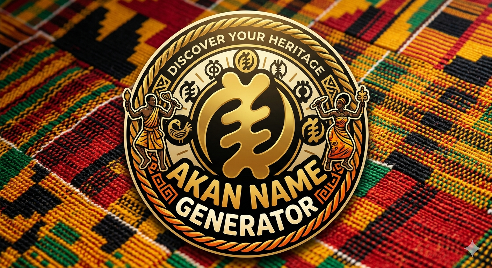

Akan Name
Generator
Discover your Ghanaian soul name — rooted in the ancient Akan tradition of naming children by the day of their birth.
Enter your details
Day
Month
Year
Your Akan Name
Akan Names by Day
| Day | ♂ Male | ♀ Female |
|---|---|---|
| Sunday | Kwasi | Akosua |
| Monday | Kwadwo | Adwoa |
| Tuesday | Kwabena | Abenaa |
| Wednesday | Kwaku | Akua |
| Thursday | Yaw | Yaa |
| Friday | Kofi | Afua |
| Saturday | Kwame | Ama |
About Akan Naming
The Kra Din Tradition
In Akan culture, every child receives a soul name (kra din) based on the day of the week they were born.This name is believed toreflect the spiritual identity and destiny of the individual, conecting them to the universe from the moment of birth. The practice of naming children after their birth day is a cherished tradition that has been passed down through generations, serving as a powerful link to Ghanaian heritage and cultural identity.